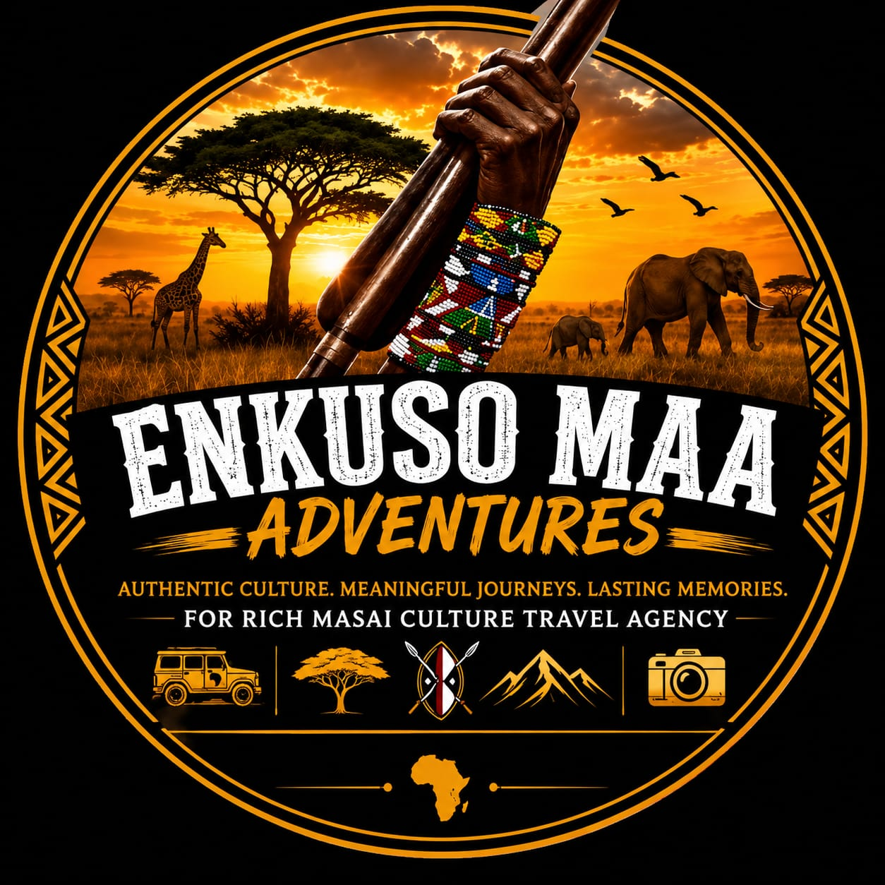

FOUNDER · CULTURAL GUIDE
Dan Nakola
Born and raised in the Maasai Mara, Dan creates the bridge between guests and the living culture of his home. His guiding is shaped by curiosity, care, and a responsibility to share the Mara honestly.

ENKUSO MAAADVENTURESTHE PEOPLE OF ENKUSO
Meet the people who turn time in the Mara into a personal, generous, and meaningful experience.
OUR TEAM
Enkuso is a small, locally rooted team. We bring together cultural knowledge, field experience, and a deep respect for the communities and landscapes we share with guests.
FOUNDER · CULTURAL GUIDE
Born and raised in the Maasai Mara, Dan creates the bridge between guests and the living culture of his home. His guiding is shaped by curiosity, care, and a responsibility to share the Mara honestly.
FIELD · COMMUNITY
Our wider guide network brings years of ecological and cultural knowledge to each journey, helping visitors look beyond the expected and listen more closely.
IMAGE CREDITS
Photographs on this page are used under Creative Commons licences and are illustrative of Maasai men and culture. They do not depict the specific individuals named.